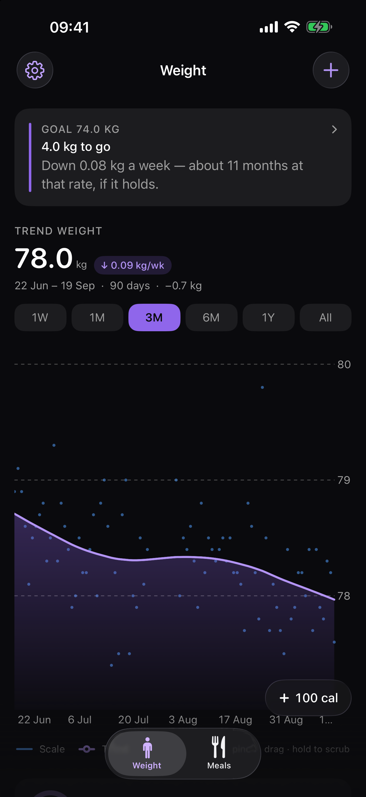
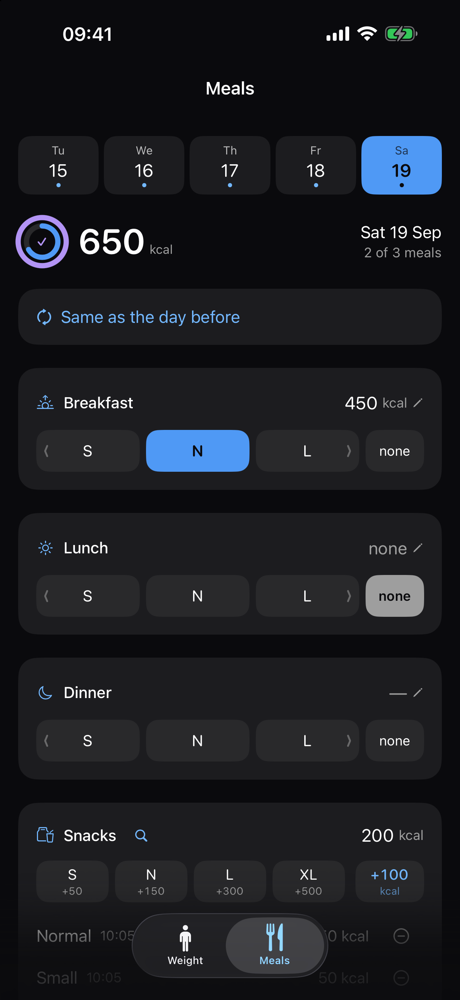
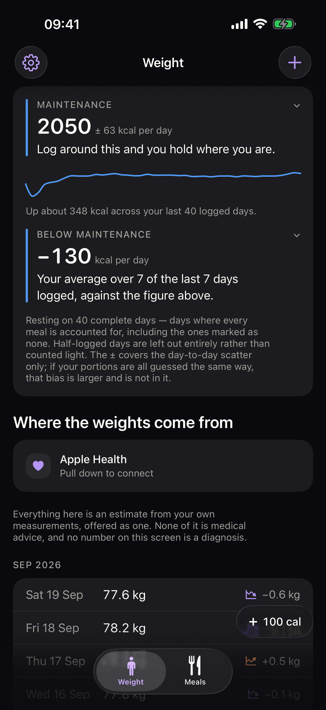

iPhone · Apple Health · no account
Calories, roughly.
Weight, precisely.
Ballpark is a scale, made useful.
Your weight moves a kilogram or more in a day on water alone. Ballpark runs your scale readings through a Kalman filter and a smoother — the estimator used for tracking noisy signals — and draws the line underneath, with the rate of change it implies.
It logs food too, deliberately badly. You tap one of four buckets for each meal — small, normal, large, huge — and snacks add up rather than replacing each other. That is the whole input. No barcode scanner, no food database, no photograph analysed by a model that returns “642 kcal” as though it had measured something.



What it does
A trend line, not yesterday’s number
Over a fortnight of ordinary living, roughly 84% of a unit change in body weight is fat-free mass — water, gut contents, glycogen. The filter separates the signal from that, and the app shows you both: the raw readings as points, the trend as a line.
A food log that admits it is guessing
Four buckets per meal, calibrated once to what your own normal portion is worth. A meal you skipped is one tap, and it is different from a meal you forgot — the app needs to know which.
What you actually spend
After a fortnight of complete days, Ballpark works out your energy expenditure from your own logged intake against what the scale did, rather than from a formula off your age and height. It is in the units of your own logging: if your portions run low, the figure runs low with them, and the two cancel when you log against it. The app says so, in those words, on the card itself.
A goal, if you want one
State a goal weight and the app will tell you how far there is to go and how long your own measured rate would take to get there. It never invents a goal, never adjusts one you set, and never treats missing it as anything at all. Without a goal you still get one plain sentence at the top of the screen every time you open it — “Down 0.4 kg over the last month” — rather than five statistics and no verdict.
Log without opening it
Seven widgets for the Home and Lock Screen, including one for the maintenance figure. Two Control Centre buttons. And Siri: “log my weight”, “log a normal meal”. Tapping a bucket on a widget writes straight to the log without the app ever opening.
Your data, and the door out of here
Export everything as two CSV files whenever you like. The weights file carries the filter’s own trend and slope beside each reading, so the maths can be checked without re-running it. A local-only app owes you an exit more than a syncing one does, not less: there is no copy on a server to fall back on.
What it will not do
- No account, no sign-in, no sync, no server. The app makes no network requests at all. The one link out — to Open Food Facts, for looking up what something is worth — hands a web address to Safari and carries nothing about your log with it.
- No advertising, no analytics, no crash reporting, no third-party SDKs.
- It never writes to Apple Health — it only reads weight, if you allow it.
- It will not nag you to log food. A guess made to satisfy a notification is worse than no guess.
Support
The maintenance figure has not appeared
It needs fourteen days that carry both a weigh-in and a complete meal log — every meal your own schedule expects, including the ones you mark none because you skipped them. Half-logged days are left out entirely rather than counted light, because a day missing its dinner looks exactly like a day with a large deficit.
My weight from my scale is not showing up
Pull down on the Weight screen to check Apple Health. If nothing arrives, check Settings › Health › Data Access & Devices › Ballpark and make sure reading weight is allowed. Manual entries always win over Health ones, so a reading you corrected by hand is never overwritten by a later import.
I recalibrated a meal and my history looks wrong
When you set a new “normal” portion, the app offers to re-price the last fourteen days of meals that were logged with a bucket. Meals where you typed a number are left alone. If you declined at the time, set the normal portion again and accept the offer.
The numbers look small on my phone
Explanatory text follows your system text size (Settings › Display & Brightness › Text Size), in the app and in the widgets. The numbers and the tap targets are fixed by design, and the whole layout scales up a little on larger phones.
How do I get my data out?
Settings › Your data gives you two CSV files — weights and meals — through the normal share sheet. Nothing is uploaded; you choose where the copy goes.
Why does it want me to mark meals I skipped?
Because a meal you skipped and a meal you forgot look identical otherwise, and the difference is the largest source of error in the maintenance figure. A day missing its dinner looks exactly like a day with a large deficit. Only days where every meal is accounted for are used.
Something else
Write to the address below. There is no account to look up and no data on any server, so please describe what you saw — nothing can be checked from this end.
Privacy policy
Last updated: 18 September 2026.
Ballpark is a weight tracker with a simple food log. The short version: nothing you enter ever leaves your iPhone.
What the app collects
Nothing is collected by us. There is no account, no sign-in, no analytics, no advertising, no crash reporting, and no third-party software development kits of any kind. The app makes no network requests at all — it has no server to talk to.
What the app stores on your device
All of the following stays in the app’s own storage on your iPhone, and in the shared storage the app uses for its widgets:
- Weight readings — the value, the date, and whether you typed it or it came from Apple Health.
- Meals and snacks — which portion you tapped, the resulting calorie estimate, and when you logged it.
- Your settings — portion calibrations, day patterns, daily target, goal weight, reminder time, and unit preference.
- Exports you ask for — a CSV you request is written to the device's temporary storage and handed to the system share sheet. Where it goes next is your choice, and the app plays no part in it.
Apple Health
If you grant permission, the app reads body-mass (weight) samples from Apple Health so readings from a connected scale appear without retyping.
The app never writes to Apple Health. This is enforced
three ways: there is no write method in the code, authorisation is requested
with an empty “share” set so iOS never offers write permission, and the
Info.plist deliberately omits NSHealthUpdateUsageDescription,
which means iOS would terminate the app if it ever attempted a write.
Health data read by the app is copied into the app’s own local storage so the app still works if you deny or revoke permission. It is never transmitted anywhere. You can revoke access at any time in Settings › Health › Data Access & Devices, or in Settings › Privacy & Security › Health.
Camera and photo library
The app does not use the camera and cannot read your photo library. It requests no permission for either. An earlier version photographed meals; that feature was removed, and the app deletes any photographs left behind by it on first launch.
Links to other websites
The app links to Open Food Facts, an open, community-run food database, for looking up what something is worth. Opening it hands a web address to Safari; the app itself still makes no network requests, and nothing about your log goes with the link. Once there you are subject to that site’s privacy policy, not this one.
Notifications
If you switch on the weigh-in reminder, the app schedules a local notification on your device. Nothing is sent through any server.
Sharing
Your information is not sold, shared, or disclosed to anyone, because it never leaves your device in the first place. There are no third parties involved in the operation of this app.
Deleting your data
Deleting the app removes everything: the database and the settings. Within the app you can delete individual weight entries, meals, snacks and measurements. Data the app read from Apple Health is not deleted from Apple Health by deleting the app — manage that in the Health app.
Children
The app is not directed at children and collects nothing from anyone.
Changes
If this policy changes, the updated version will be published at this address with a new date at the top.
Contact
Questions about this policy, or about the app: ballpark@tombak.xyz